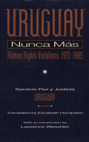

A graphic and horrifying report of human rights violations by the military dictatorship in Uruguay from 1973 to 1985
A graphic and horrifying report of human rights violations by the military dictatorship in Uruguay from 1973 to 1985


 A graphic and horrifying report of human rights violations by the military dictatorship in Uruguay from 1973 to 1985
A graphic and horrifying report of human rights violations by the military dictatorship in Uruguay from 1973 to 1985

|  |
Uruguay Nunca MásHuman Rights Violations, 1972-1985Servicio Paz y Justicia, translated by Elizabeth Hampsten, introduction by Lawrence Wechslerpaper EAN: 978-1-56639-146-7 (ISBN: 1-56639-146-6) |
"This remarkable book, a bestseller in Uruguay, soberly and authoritatively documents the horrors of repression under the military regime that ruled Uruguay from 1972 to 1985. Unlike Argentina or Brazil, in Uruguay neither the government nor the church conducted this investigation; it was the work of citizens who combined personal testimony and a knowledge of social science, as Lawrence Weschler notes in his perceptive introduction.... It teaches us about the breakdown of democracy in Uruguay, the practice of state terrorism and the scars such depredations left on individuals and on the country. 'To forget past crimes becomes a new crime against human nature,' the authors conclude."
—Publishers Weekly
Based on hundreds of interviews, a survey of ex-prisoners, and published testimonials, Uruguay Nunca Más documents the atrocities that were committed during the military dictatorship in Uruguay from 1973 to 1985. The organization Servicio Paz y Justicia-Uruguay (SERPAJ) traces the various stages that Uruguay's military government passed through in its twelve years in power, noting the progressive distortion of the legislative judicial, and executive branches. Detailing the means by which civil liberties were abrogated by the repressive regime, this report examines how the Doctrine of National Security affected daily life in a country that had been hailed as "the Switzerland of America."
Unlike the bloody, highly publicized events in Chile and Argentina, the hushed repression in Uruguay was carried out with unprecedented sophistication. Describing some twenty forms of torture, disappearances, and other mechanisms of repression, Uruguay Nunca Más documents how the population at large was subjected to abuse, terror, and lies, amid economic depression and social upheaval. This disturbing report by SERPAJ cites as its purpose the words of George Santayana: "Those who do not remember their past are condemned to repeat it." It should serve as a cautionary lesson for citizens in any democracy.
Excerpt available at www.temple.edu/tempress
Preface
Acknowledgments
Introduction – Lawrence Weschler
Abbreviations
Part I: The Historical Process
1. The Decline of the Democratic System, I: Crisis, Social Mobilization, and Authoritarianism
2. The Decline of the Democratic System, II: Ascendancy of the Military
3. The Military Dictatorship, I: Social Control and State Militarization
4. The Military Dictatorship, II: Military Failure and the Restoration of Democracy
Part II: The Practice of State Terrorism
5. Arrests
6. Torture
7. Military Justice
8. The Long Imprisonment
9. Prison Medical Care
10. Deaths
11. Forced Disappearances
12. Doctors', Psychologists', and Paramedics' Participation in Torture
13. Coordination among Military Operations in the Southern Cone
Part III: Beyond Prison
14. The Dismantling of Civilian Life
15. The Long Exile
16. The Scars of Terrorism
Epilogue: Final Words
Appendix A: Methodology
Appendix B: Persons Who Dies as a Result of the Political Violence Beginning April 14, 1972
Appendix C: Uruguayans Who Were Arrested and Disappeared
Notes
Index
Servicio Paz y Justicia–Uruguay is a team of Lawyers, doctors, and human rights specialists dedicated to the preservation of human rights in Uruguay.
Elizabeth Hampsten is Associate Professor of English at the University of North Dakota.
Latin American/Caribbean Studies
Law and Criminology
© 2015 Temple University. All Rights Reserved. This page: http://www.temple.edu/tempress/titles/877_reg.html.